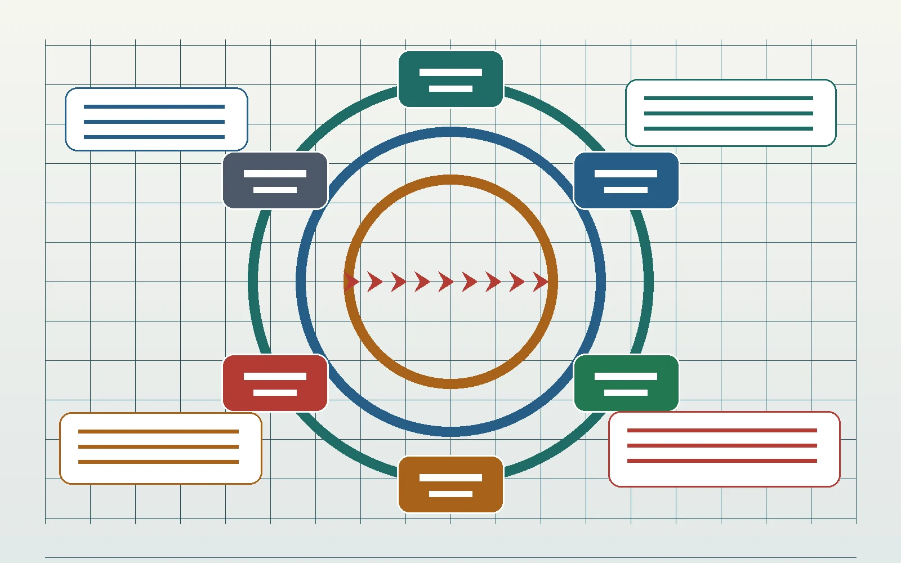
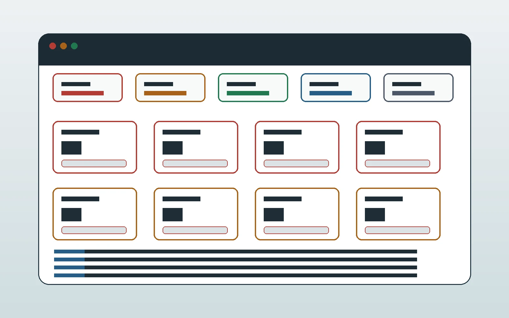

ESP32 Four-Relay Workbench
ESP32 four-relay workbench
A public, source-backed technical package for the low-voltage controller path, static admin HMI, read-only XBee discovery, MicroSD assets/logs planning, and the hard stop before any relay/load wiring.
Current status
Public docs deployment, local artifact gates, closed hardware paths
Review quality evidenceQuality gates
What the public artifact checks
The quality page summarizes the generated-artifact policy, manifest hash and link audits, smoke checks, safe-core host tests, XBee read-only boundary, and explicit non-coverage for live hardware.
Open quality evidenceGenerated artifact policy
Only allowlisted site files, docs, assets, and demo files are published.
Review policyManifest and link audit
Public paths, hashes, blocked sources, and local links are checked before handoff.
Review auditHardware non-coverage
No live board, relay, load-side, or radio-write approval is claimed.
Review boundaryPublic improvements are reviewed as a workspace, source, risk, QA, and knowledge-record loop. The panel method improves the site without widening the hardware, radio, firmware, or deployment claims.
Workspace cartographer
Maps the public artifact, source bundle, dirty tree, and documentation links before any page change starts.
Review methodSource researcher
Uses source-index entries and official documentation for deployment, model, hardware, safety, and protocol facts.
Open sourcesArchitecture risk reviewer
Checks that public copy keeps live hardware, relay/load wiring, and XBee write claims behind closed gates.
Review risksQA validation reviewer
Keeps build, manifest, smoke, scaffold, syntax, host-test, and browser-render checks tied to each release.
Review checksKB curator
Records task logs and source-backed ledgers when public knowledge changes, while private agent records stay unpublished.
Review recordsBuild sequence
Low-voltage construction path
Open Prototype Build Packet Open visual blueprint Open full guideVisual blueprint review
Start with the conceptual map, R&D loop, and blocked wiring gates.
Board and shield inspection
Record power source, jumper state, rail checks, and shield continuity.
MicroSD asset/log path
Keep static assets and log planning separate from hardware mutation.
XBee read-only discovery
Use passive discovery first, then confirmed AT read queries only.
Expansion dry proof
Prove mux inputs and expander latches before relay inputs.
Qualified load review
Treat load work as a review package, not a wiring procedure.
R&D loop
The workbench advances by gates, not guesses
The public package surfaces the review lanes that must close before any firmware, radio, relay, TFT, or load-side work can move forward.

Relay Labels
Channel map and local labels
Output A
BlockedShield routing and relay input behavior remain blocked.
Static admin HMI
A locked control surface for review
The demo publishes safety-locked relay states, storage panels, XBee status, logs, and locally saved relay labels without a backend requirement or hardware-control claim.
Launch demo
Source-backed safety gates
Review gates before load work
Mains work blocked
No step-by-step mains wiring instructions are published.
Read mains gateRelay contacts blocked
Relay module behavior must be verified before any load wiring.
Read power gatesMux relay outputs rejected
Relay pin relief moves to a latched expander and driver stage.
Read expansion planXBee writes blocked
Passive discovery and fixed AT read queries come before any radio setting changes.
Read XBee boundaryPublic file bundle
Allowlisted technical package
GitHub Pages publishes a generated artifact assembled by
scripts/build_github_pages.py. The public bundle keeps
source-backed docs and excludes agent records, private uploads,
vendor PDFs, bulky binaries, raw photos, generated screenshots, and
private bench records.
Manifest
Generated artifact only
Open generated manifest